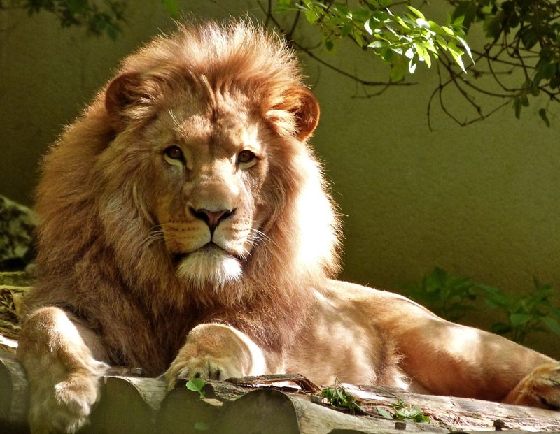
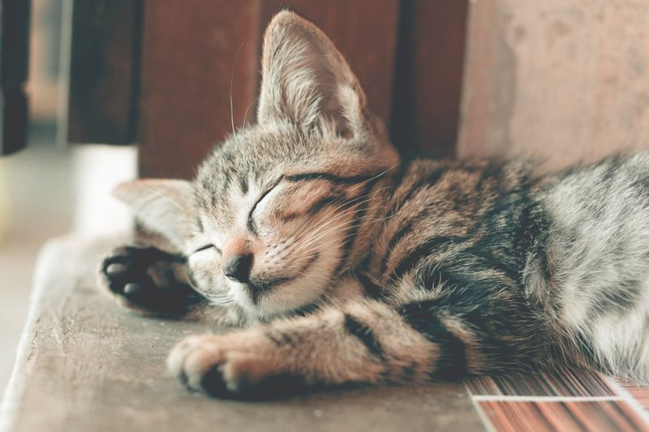
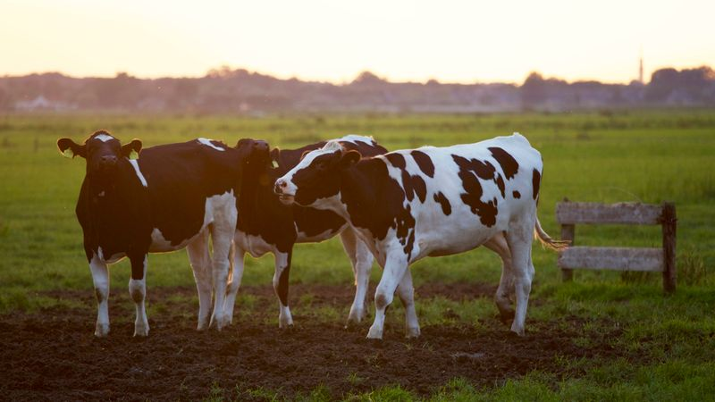
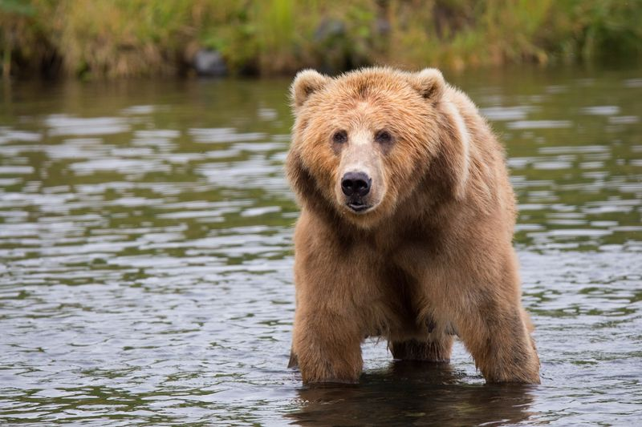
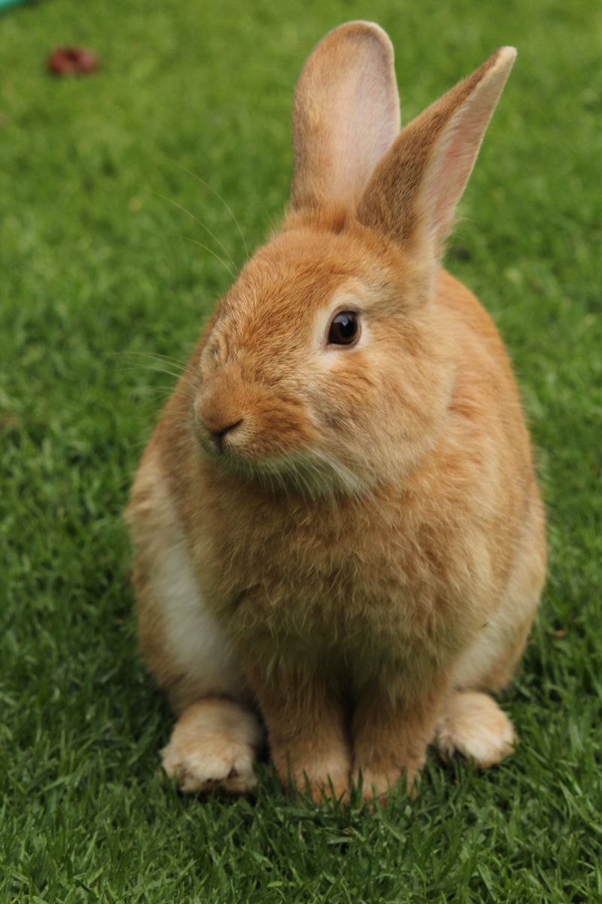
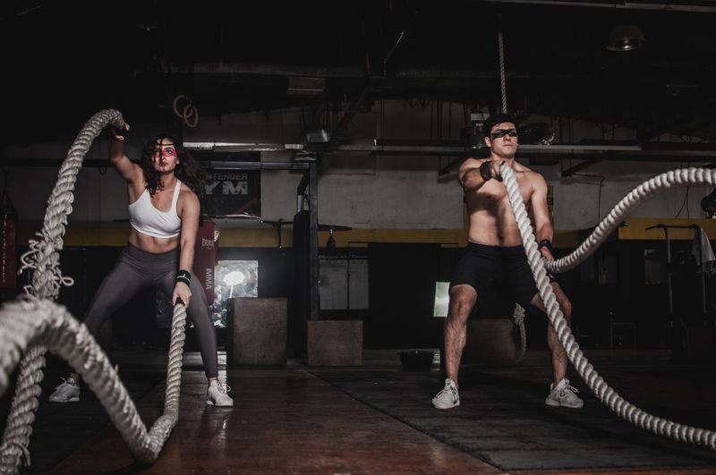
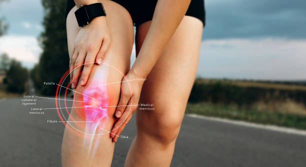
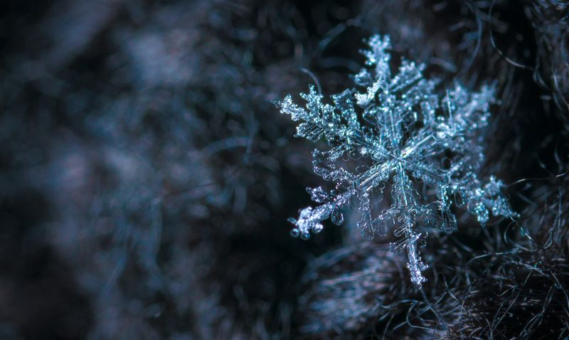
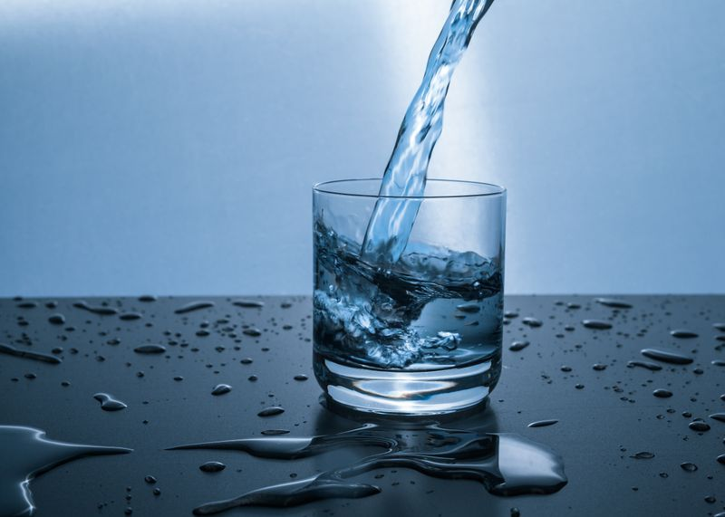

Bouche → Œsophage → Estomac → Intestin grêle → Gros intestin → Anus C'est un tube de presque 8 mètres de long !
❓ Q2 — Que fait la bouche ?
Quel est le travail de ta bouche quand tu manges ?
😁 Tes dents sont des outils super importants !👀 Voir la réponse
La bouche fait 2 choses :
Les dents coupent et broient les aliments en petits morceaux
La salive mouille et ramollit les aliments pour les rendre plus faciles à avaler
C'est comme un mixeur !
❓ Q3 — L'estomac
Que se passe-t-il dans ton estomac ?
🫃 L'estomac est comme une machine à laver pour la nourriture👀 Voir la réponse
L'estomac est une grosse poche musclée. Il malaxe les aliments et ajoute des sucs gastriques (un liquide acide) qui transforment tout en bouillie. Ça dure environ 2 à 4 heures !
❓ Q4 — L'intestin grêle
Pourquoi l'intestin grêle est-il si important ?
👀 Voir la réponse
C'est là que les nutriments (les bonnes choses de la nourriture : vitamines, sucres, protéines) passent à travers la paroi de l'intestin pour aller dans le sang. C'est un tube de 6 mètres plié dans ton ventre !
❓ Q5 — Le gros intestin
À quoi sert le gros intestin ?
👀 Voir la réponse
Le gros intestin récupère l'eau qui reste dans les déchets. Ce qui reste (les déchets solides) forme les selles (le caca 💩) qui sortent par l'anus.
❓ Q6 — Le rôle du sang dans la digestion
Quel est le travail du sang pendant la digestion ?
🔴 Le sang transporte la nourriture partout dans ton corps👀 Voir la réponse
Le sang est le livreur de ton corps ! Il récupère les nutriments dans l'intestin grêle et les transporte vers toutes les cellules du corps (muscles, cerveau, cœur...). Sans le sang, tes organes n'auraient rien à manger !
❓ Q7 — Rôle de chaque organe (tableau)
Complète : que fait chaque organe ?
👀 Voir la réponse
Organe
Son travail
Bouche
Broyer + mouiller avec la salive
Œsophage
Tube qui pousse la nourriture vers l'estomac
Estomac
Malaxer + transformer en bouillie (sucs gastriques)
Intestin grêle
Absorber les nutriments → les envoyer dans le sang
Gros intestin
Récupérer l'eau + former les déchets
❓ Q8 — Vrai ou Faux : la digestion
« Les aliments passent directement de la bouche à l'estomac. » Vrai ou faux ?
👀 Voir la réponse
Faux ! Entre la bouche et l'estomac, il y a l'œsophage (un tube d'environ 25 cm qui pousse les aliments vers le bas grâce à ses muscles).
🦁 Les régimes alimentaires (Q9–Q15)
❓ Q9 — Les 3 régimes alimentaires
Il existe 3 grandes familles de mangeurs chez les animaux. Lesquelles ?

🦁 Le lion ne mange que de la viande !👀 Voir la réponse
🥩 Carnivore — mange de la viande (lion, chat, aigle, requin)
🥬 Herbivore — mange des plantes (lapin, vache, cheval, mouton)
🍽️ Omnivore — mange de tout : viande ET plantes (ours, cochon, humain)
❓ Q10 — Comment reconnaître un carnivore ?
Regarde le menu d'un animal. Comment sais-tu qu'il est carnivore ?

🐱 Le chat chasse les souris — c'est un carnivore !👀 Voir la réponse
Son menu contient uniquement de la viande (ou du poisson, des insectes, d'autres animaux). Pas de plantes dans son repas ! Exemples : souris, oiseaux, poissons, insectes.
❓ Q11 — Comment reconnaître un herbivore ?
Comment sais-tu qu'un animal est herbivore ?

🐄 La vache mange de l'herbe toute la journée👀 Voir la réponse
Son menu contient uniquement des végétaux : herbe, feuilles, fruits, graines, légumes, fleurs. Pas de viande du tout !
❓ Q12 — Comment reconnaître un omnivore ?
Comment sais-tu qu'un animal est omnivore ?

🐻 L'ours mange du saumon ET des myrtilles !👀 Voir la réponse
Son menu contient des animaux ET des végétaux. Il mange un peu de tout ! Comme toi quand tu manges du poulet avec des légumes 🍗🥦
❓ Q13 — Exercice : le lapin
Un lapin mange : herbe, carottes, foin, trèfle, pissenlit. Quel est son régime ?

🐰 Que des plantes dans son assiette !👀 Voir la réponse
Herbivore 🥬 — il ne mange que des végétaux (herbe, carottes, foin, trèfle, pissenlit). Pas un seul morceau de viande !
❓ Q14 — Exercice : le renard
Un renard mange : souris, lapins, poules, cerises, raisins. Quel est son régime ?
👀 Voir la réponse
Omnivore 🍽️ — il mange des animaux (souris, lapins, poules) ET des végétaux (cerises, raisins). Il mange de tout !
❓ Q15 — Exercice : l'aigle
Un aigle mange : souris, serpents, lièvres, poissons. Quel est son régime ?
👀 Voir la réponse
Carnivore 🥩 — il ne mange que des animaux. Pas une seule plante dans son menu !
🦴 L'appareil locomoteur (Q16–Q23)
❓ Q16 — C'est quoi une articulation ?
Qu'est-ce qu'une articulation ? Montre-en sur ton corps !
🦵 Le genou te permet de plier la jambe👀 Voir la réponse
Une articulation, c'est l'endroit où 2 os se rejoignent et qui te permet de bouger. C'est comme une charnière de porte ! Exemples : genou, coude, épaule, hanche, cheville, poignet.
❓ Q17 — Les grands os du corps
Cite les principaux os et dis où ils se trouvent.
💀 Ton squelette a plus de 200 os !👀 Voir la réponse
Os
Où ?
Crâne
Tête (protège le cerveau)
Colonne vertébrale
Dos (plein de petites vertèbres)
Côtes
Thorax (cage qui protège cœur + poumons)
Humérus
Bras (entre épaule et coude)
Radius + Cubitus
Avant-bras (2 os !)
Fémur
Cuisse (le plus long os du corps !)
Tibia + Péroné
Jambe (entre genou et cheville)
Bassin
Hanches
❓ Q18 — À quoi sert le squelette ?
Pourquoi as-tu besoin d'un squelette ? (2 rôles)
👀 Voir la réponse
🏗️ Soutenir ton corps (sans squelette, tu serais mou comme une méduse !)
🛡️ Protéger les organes fragiles (le crâne protège le cerveau, les côtes protègent le cœur et les poumons)
❓ Q19 — Comment tu fais pour bouger ?
Explique comment ton corps fait pour plier le bras.
💪 Pour plier le bras, tout un système se met en marche !
Le muscle (biceps) reçoit l'ordre et se contracte (il se raccourcit)
Le muscle tire sur le tendon
Le tendon tire sur l'os → ton bras se plie !
❓ Q20 — C'est quoi un tendon ?
À quoi servent les tendons ?
👀 Voir la réponse
Les tendons sont des cordes très solides et blanches qui attachent les muscles aux os. Quand le muscle tire, le tendon transmet la force à l'os. C'est comme une corde attachée à un levier !
❓ Q21 — C'est quoi un muscle ?
Quel est le rôle des muscles ?

💪 Les muscles produisent la force pour bouger👀 Voir la réponse
Les muscles sont les moteurs de ton corps. Ils se contractent (se raccourcissent) pour tirer sur les os et produire un mouvement. Tu en as plus de 600 !
❓ Q22 — Os, muscles, articulations : qui fait quoi ?
Associe chaque élément à son rôle.

🏃 Pour courir, os + muscles + articulations travaillent ensemble !👀 Voir la réponse
Élément
Comparaison
Rôle
🦴 Os
La charpente d'une maison
Soutenir + protéger
💪 Muscles
Le moteur d'une voiture
Produire le mouvement
🔗 Articulations
Les charnières d'une porte
Permettre aux os de bouger
🧵 Tendons
Une corde attachée
Relier muscle à os
⚡ Nerfs
Des fils électriques
Transporter les messages du cerveau
❓ Q23 — Vrai ou Faux : locomoteur
« Le muscle est directement collé à l'os. » Vrai ou faux ?
👀 Voir la réponse
Faux ! Le muscle est attaché à l'os par un tendon. Le tendon fait le lien entre les deux.
💧 Les états de l'eau (Q24–Q30)
❓ Q24 — Les 3 états de l'eau
L'eau peut se présenter sous 3 formes. Lesquelles ? Donne un exemple pour chacune.

🧊 L'eau solide = de la glace !👀 Voir la réponse
🧊 Solide — glace, glaçons, neige, givre, verglas
💧 Liquide — eau du robinet, pluie, rivière, mer
♨️ Gazeux — vapeur d'eau (INVISIBLE !), buée sur une vitre
❓ Q25 — Que se passe-t-il à 0°C ?
Tu mets de l'eau dans le congélateur. Que se passe-t-il quand la température descend à 0°C ?
❄️ À 0°C, l'eau se transforme en glace👀 Voir la réponse
À 0°C :
L'eau liquide se transforme en glace → c'est la solidification
Et dans l'autre sens : la glace fond et redevient liquide → c'est la fusion
0°C est la température de changement entre solide et liquide.
❓ Q26 — Que se passe-t-il à 100°C ?
Tu fais chauffer une casserole d'eau. Que se passe-t-il à 100°C ?

♨️ De grosses bulles = l'eau bout à 100°C !👀 Voir la réponse
À 100°C, l'eau liquide se transforme en vapeur d'eau (gaz). C'est l'ébullition. On voit de grosses bulles qui éclatent à la surface. Toute l'eau peut finir par disparaître !
❓ Q27 — Les changements d'état (schéma)
Comment s'appellent les changements d'état de l'eau ?
💨 Quand l'eau chauffe, elle se transforme en gaz
flowchart LR
A["🧊 Solide (glace)"] -->|"Fusion (0°C)"| B["💧 Liquide (eau)"]
B -->|"Ébullition (100°C)"| C["♨️ Gaz (vapeur)"]
C -->|Condensation| B
B -->|"Solidification (0°C)"| A
👀 Voir la réponse
Fusion : solide → liquide (glace qui fond à 0°C)
Solidification : liquide → solide (eau qui gèle à 0°C)
Ébullition / Évaporation : liquide → gaz
Condensation : gaz → liquide (buée sur la vitre froide)
❓ Q28 — Évaporation vs Ébullition
Quelle est la différence entre évaporation et ébullition ?
☀️ La flaque sèche au soleil = évaporation lente👀 Voir la réponse
Évaporation
Ébullition
Température
N'importe quelle température
Seulement à 100°C
Vitesse
Lente
Rapide
Où ?
Seulement en surface
Dans toute l'eau (bulles !)
Exemple
Flaque qui sèche au soleil
Casserole qui bout sur le feu
❓ Q29 — La vapeur d'eau est-elle visible ?
Quand on voit de la « fumée blanche » au-dessus d'une casserole, est-ce de la vapeur d'eau ?
👀 Voir la réponse
Non ! La vapeur d'eau est un gaz invisible (on ne peut pas la voir). La « fumée blanche » que tu vois, ce sont des minuscules gouttelettes d'eau liquide (de la buée) qui se forment quand la vapeur se refroidit dans l'air.
❓ Q30 — Le cycle de l'eau dans la nature
Comment l'eau circule-t-elle dans la nature grâce aux changements d'état ?
🌧️ La pluie = de l'eau qui retombe sous forme liquide👀 Voir la réponse
☀️ Le soleil chauffe l'eau des rivières/mers → évaporation (liquide → gaz)
☁️ La vapeur monte et se refroidit → condensation (gaz → gouttelettes = nuages)
🌧️ Les gouttes grossissent → précipitations (pluie, neige, grêle)
🏞️ L'eau retourne dans les rivières et la mer → et ça recommence !